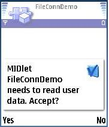
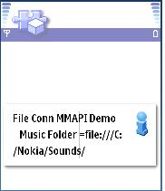
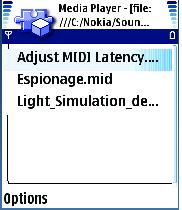
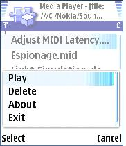
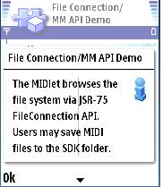
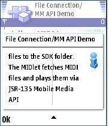
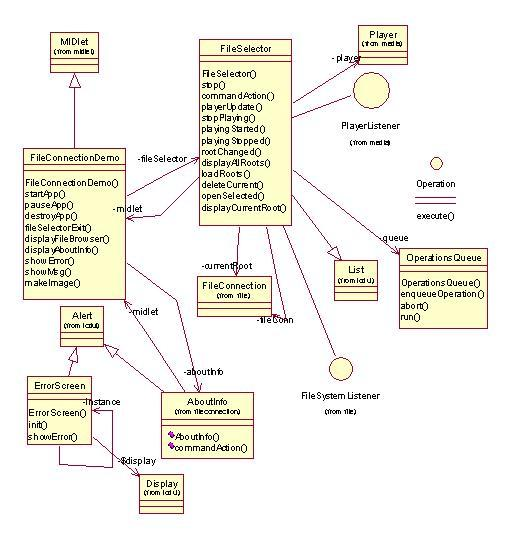

This example demonstrates both JSR 75 file connection and JSR 135 Mobile Media API. The application displays MIDI (.mid) files available on the device file system and allows the user to play them.
The example makes use of the standard MIDP application framework and LCDUI API. The reader should be familiar with these areas before attempting to understand this example.
The example is built using the standard method for building and running as described in Building and running the examples.
In order to play a MIDI file you must place the file in the appropriate directory for your MIDP SDK.
When the midlet starts the user is prompted to accept the read data operation and the following screen appears.

Screens similar to the above screen will appear when operations access the file system. Once the midlet has read the contents of the music folder a spash screen will appear as shown below.

Any key press will advance the midlet to the next screen that displays the contents of the music directory.

Selecting the options will cause the following pop up screen to appear.

This allows playing or deleting the currently selected file. The user may also access an about info box or exit the meidlet from this screen. When a MIDI file is playing the Play option on the screen above is changed to a Stop option.
Here are two screen shots that display the about info screen.


The FileConnectionDemo class is the midlet class for this example. The FileSelector class provides most of the application functionality by making use of the services provided by the JSR 135 Player class and the JSR 75 FileConnection class. The example also has two classes derived from the Alert class for part of the user interface.

This example has demonstrated how to query a device to obtain its supported media formats, download protocols and capture capabilities.